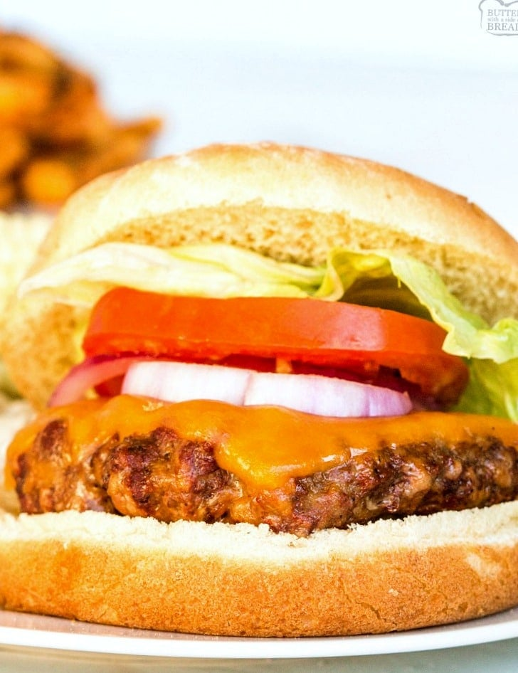

Simple Cheese Burger Recipe

Description
Follow this simple recipe to have a tasty Cheese Burger!
Ingredients
- Ground beef
- Seasoning blend
- Sliced Cheese
- Toppings (Tomato, Onions, Ketchup, etc.)
- Buns
Steps
- Preheat grill to medium high to high heat
- Prepare the patties to desired size mixing in seasoning
- Grill the Hamburgers
- Add on sliced cheese
- Remove from grill and serve on bun